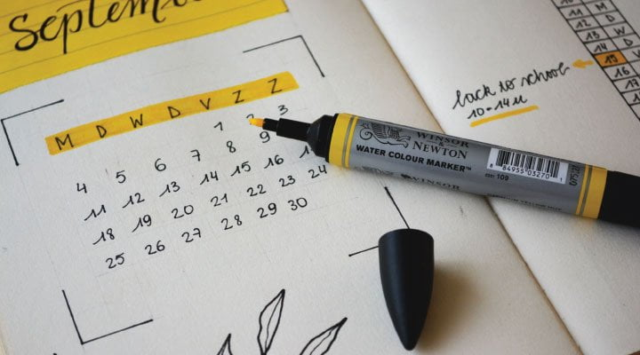
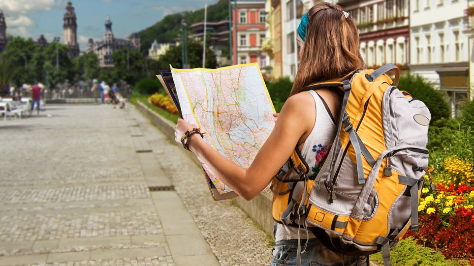
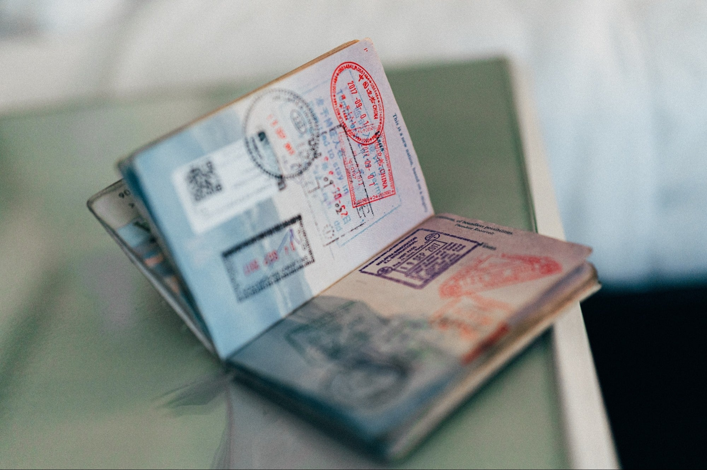

Parece algo bastante obvio, pero a veces uno quiere empezar a planear viajes sin tener en claro el o los destinos. Así que para que su plan sea efectivo ,el primer paso para organizar su viaje es la elección del destino.
Siempre está bueno leer sobre cada lugar y sus particularidades, como esas atracciones que los hacen únicos. Embeberse del ambiente y la cultura de un lugar siempre los va a ayudar a moverse en ellos también.
Para realizar la elección, pueden ayudarse leyendo guías de viaje.
PLANIFICA TU VIAJE
Pasos para saber cómo planificar un viaje!
¿Cómo planificar un viaje? ¿Cómo armar un itinerario de viajes? Estas son preguntas muy frecuentes que se hacen los viajeros y, si bien no hay una única respuesta válida, en este post les vamos a dejar algunas recomendaciones que los pueden ayudar a planear viajes desde cero, para emprender esa aventura que tanto anhelan!
Ahora sí, busquen lápiz y papel para tomar nota que aquí va nuestro listado con los pasos para planificar su próximo viaje. Espero que les sirva!
1. Elegir lugar de destino
2. Definir la duración del viaje

Luego de decidir el destino, la segunda cuestión en la que deben pensar es en el tiempo disponible que tendrán para realizar el viaje. Es necesario saber de cuantos días o semanas disponen, o al menos un estimativo, así pueden empezar a hacer un presupuesto para el viaje, un punto clave cuando se planea viajes.
Tengan en cuenta que mientras mayor sea el tiempo que permanezcan en el exterior, más se amortizan los costos fijos del viaje, como por ejemplo los pasajes y visados, en el caso de requerir.
Del otro lado están los costos variables que sí dependerán de la duración del viaje. Tendrán que ver de cuánto dinero disponen, y en función de eso, cuánto es lo máximo que pueden gastar por día.
3. ¿Este viaje es mejor hacerlo solo o acompañado?

Otro de los puntos claves, será establecer si viajarán solos o acompañados de familiares, amigos, pareja, etc. ¿Qué prefieren o qué es mejor? Eso es algo que solo ustedes pueden responder!
Lo que sí, tengan en cuenta que muy probablemente este punto influya en sus gastos, ya que por lo general los costos son más bajos cuando se comparte alojamiento o comida, y además puede llegar a generar cambios en los recorridos y visitas que hagan en el viaje, en función de lo que cada uno quiera.
En el caso de viajar con otras personas, recomendamos repasar bien el itinerario de viaje y los recorridos que quieran realizar antes de emprenderlo, para poder ponerse de acuerdo y que luego nadie se sienta disgustado con los planes una vez que ya estén de viaje.
4. ¿Qué tipo de viaje prefieren?
Teniendo en cuenta los puntos que mencionamos previamente y el presupuesto del que dispongan, pueden sentarse a definir el tipo de viaje que están interesados en realizar.
Este punto es muy importante, ya que aquí van a decidir si solo quieren viajar durante algunas semanas con una visa de turismo, o si están buscando un viaje más largo que les permita hacer más cosas, como trabajar o vivir en otro país.
¿Quizás están pensando en aplicar a una Working Holiday Visa? ¿Hacer algún voluntariado? ¿Hacer algún curso de idioma en el exterior? O por qué no, combinar alguna de las anteriores! Es solo cuestión de decidir y animarse!
5. Chequear requisitos y visados

Una vez que tengan más en claro todo lo anterior, deben comenzar a investigar cuáles son los requisitos para ingresar al país de destino, en el caso de que haya alguno, eso es indispensable al momento de planear un viaje. Por ejemplo, ¿se necesita un visado para ingresar al país?, ¿les exigen algún tipo de vacuna para poder entrar?, entre otras cosas.
Por otro lado, recuerden verificar su pasaporte, que se encuentre en vigencia y que tenga una validez de al menos 6 meses contando desde la fecha de su viaje, y que tenga lugar para nuevos sellados. Algunos países incluso detallan el número de páginas que debe tener en blanco para que este sea válido.
Les recomendamos que si tienen que hacer algún tipo de trámite, como aplicar a una visa, lo hagan con tiempo, así después se relajan y pueden disfrutar de planear su viaje con la tranquilidad de que ya cuentan con eso resuelto.
6. Buscar vuelos y encontrar alojamiento
Una de las cuestiones más importante en el momento de planear viajes, son los aéreos. Existen muchos sitios y páginas webs que pueden utilizar para conseguir vuelos a precios baratos. Varias plataformas permiten consultar y comparar presupuestos.
¿Qué prefieren para descansar? Alojarse en hoteles, apartamentos, cabañas, resorts, u algún otro lugar? Las opciones son infinitas! Pueden utilizar plataformas como Booking.com o Airbnb para reservar o alquilar su alojamiento!
Más allá de la opción que elijan para alojarse, recuerden organizarlo y reservar con anticipación en función de su itinerario de viaje, así se evitan cualquier contratiempo.
7. Planear actividades y tours
Otra cuestión muy importante a la hora de planear su viaje, son las actividades y tours que quieren hacer.
Lamentablemente, en visitas cortas no se puede conocer todos los lugares turísticos de una ciudad o país, así que tener un itinerario de viaje y definir qué cosas conocer y cuáles dejar para otra oportunidad es muy importante para ganar tiempo, y quizás, ahorrar algo de dinero por reservar visitas con tiempo.
También, pueden buscar cuáles son los mejores lugares para visitar de manera gratuita como parques, sitios emblemáticos, monumentos, etc
Más allá de la opción que elijan para alojarse, recuerden organizarlo y reservar con anticipación en función de su itinerario de viaje, así se evitan cualquier contratiempo.